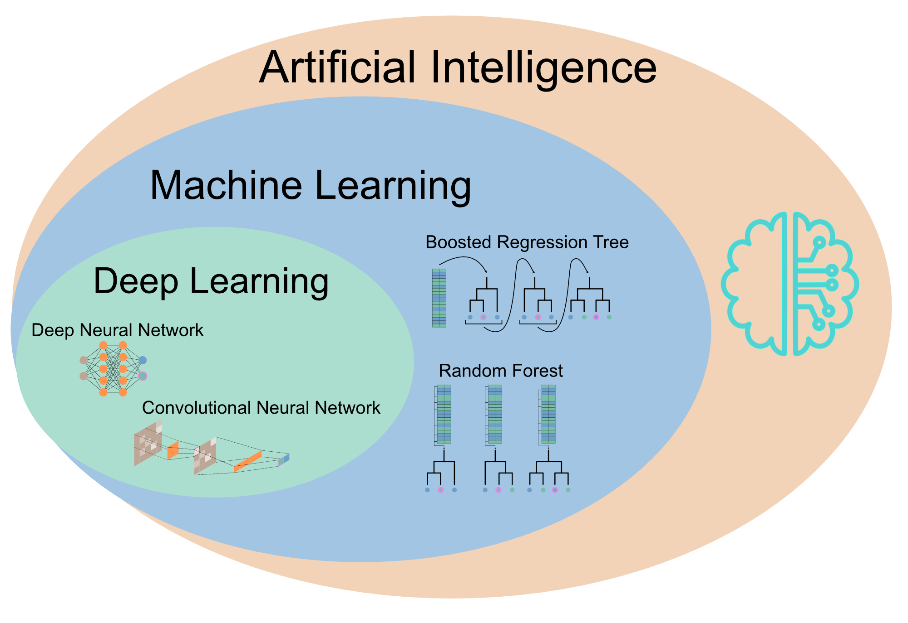

Machine Learning and Deep Learning with R
Preface
Machine learning (ML) is the process of building a predictive model that makes predictions about new data based on observations (training data). The goal of this course is to enable you to build a robust ML model, one that generalizes well to new observations and doesn’t “overfit” your training data. To do this, you will need to master a number of skills, in particular
- Understanding the bias-variance tradeoff (model complexity), including hyperparameter tuning and regularization (shrinkage)
- Understanding classic ML pipeline to tune and validate your models
- Understanding the different ML algorithms, their strengths and limitations

In recent years, a new field within ML called Deep Learning has emerged and attracted a lot of attention. The reason for this is that DL incorporates many different but very flexible architectures that allow to natively model different types of data, e.g. Convolutional Neural Networks for images or Recurrent Neural Networks for time series. However, exploiting the flexibility of DL requires a deeper, more fundamental understanding of the frameworks in which they are implemented. To this end, the course will also cover common DL frameworks such as TensorFlow (and PyTorch) and:
- Understanding neural networks and how they are trained
- Understanding different DL architectures such as Fully Connected NN, Convolutional Neural Networks, and Recurrent Neural Networks
Before the course
- Please read the following two reviews about Machine Learning in General (Pichler and Hartig 2023) and Deep Learning (Borowiec et al. 2022)
- Please install all dependencies before the course because it will take some time, see Chapter 1 for installation instructions
- This course assumes advanced knowledge of the R programming language. If you want to refresh your knowledge about R, you can find a crashcourse in R in the book of the advanced statistic course: R-Crash-Course
Authors:
Maximilian Pichler: @_Max_Pichler
Florian Hartig: @florianhartig
Contributors:
Johannes Oberpriller, Matthias Meier

This work is licensed under a Creative Commons Attribution-NonCommercial-ShareAlike 4.0 International License